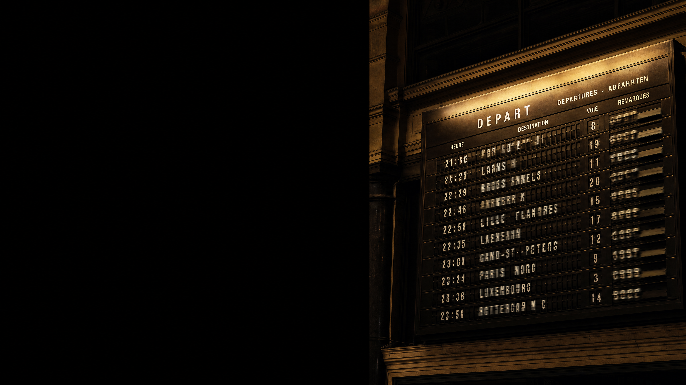

is this digital?
image: ai-generated (gpt-image-2)
digital is not the same as electronic
not one of them contains a chip.
images: ai-generated (gpt-image-2)
digital means finitely many states,
and nothing in between counts.
both halves carry weight. the second one is where the work is.
the part no program controls
light is analog:
between any two brightnesses lies another.
your program needs states:
finitely many, clearly apart.
same noise, more regions
the noise did not grow. the margin shrank.
what the thrown-away precision buys
every digital copy is a rebirth from clean states.
digitising throws information away.
on purpose.
which exact value it was inside the region: gone for good.
digitising takes two cuts
sampling slices the axis. quantization slices the value.
which cut was too coarse?
what a picture costs
what you keep, you pay for in minutes.
how far can you go?
where would you stop?
try it: what would you throw away?
the same two cuts, for sound
sampling slices time.
quantization slices loudness.
44,100 samples per second at 16 bit: that is a cd.
where your alphabet is born
value = sensor.get_clear() if value > 250: symbol = "bright" else: symbol = "dark"
the sensor delivers hundreds of numbers. this line turns them into two symbols.
how many colours are safe?
two are safe. eight are fast.
somewhere in between sits your alphabet, and only your own measurements know where.
you decide where the lines go.
from there on, your decision is the truth, not the physics.